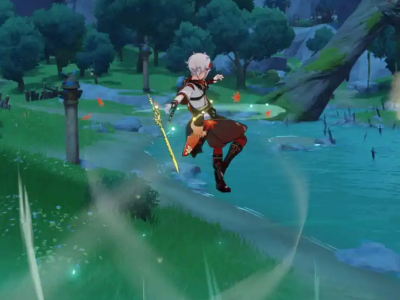
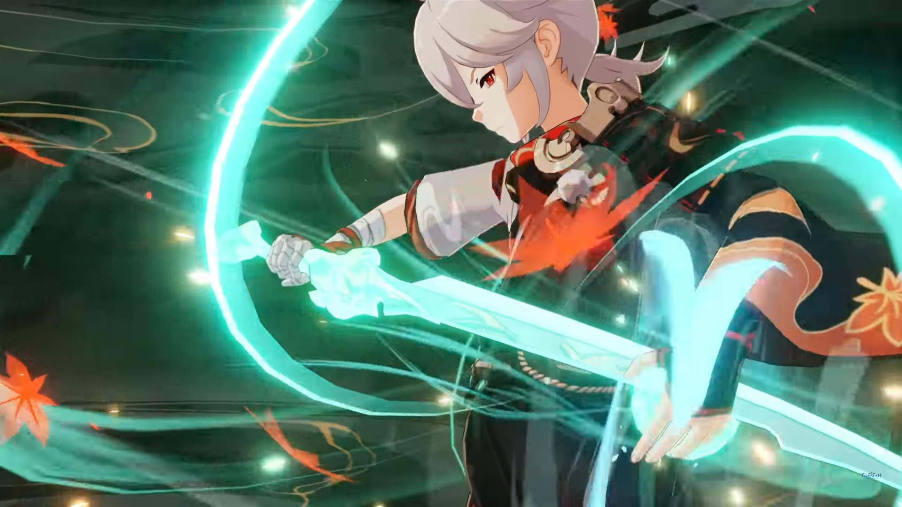

A wandering samurai of the once-famed Kaedehara Clan with an ability to read the sounds of nature, Kazuha is a temporary crewmember of The Crux. Despite being burdened by the many happenings of his past, Kazuha still maintains an easygoing disposition.
Kazuha
Elemental skill
Unleashes a secret technique as fierce as the rushing wind that pulls objects and opponents towards Kazuha's current position before launching opponents within the AoE, dealing Anemo DMG and lifting Kazuha into the air on a rushing gust of wind. Within 10s of remaining airborne after casting Chihayaburu, Kazuha can unleash a powerful Plunging Attack known as Midare Ranzan. Press Can be used in mid-air. Hold Charges up before unleashing greater Anemo DMG over a larger AoE than Press Mode. Plunging Attack: Midare Ranzan When a Plunging Attack is performed using the effects of the Elemental Skill Chihayaburu, Plunging Attack DMG is converted to Anemo DMG. On landing, Kazuha creates a small wind tunnel via a secret blade technique that pulls in nearby objects and opponents. Midare Ranzan's DMG is considered Plunging Attack DMG.
Elemental burst
The signature technique of Kazuha's self-styled bladework — a single slash that strikes with the force of the first winds of autumn, dealing AoE Anemo DMG. The blade's passage will leave behind a field named "Autumn Whirlwind" that periodically deals AoE Anemo DMG to opponents within its range. Elemental Absorption If Autumn Whirlwind comes into contact with Hydro/Pyro/Cryo/Electro, it will deal additional elemental DMG of that type. Elemental Absorption may only occur once per use.
Personality
If one's heart is empty, all under heaven is empty. But if one's heart is pure, all under heaven is pure. —Kazuha's Musings
A wandering samurai from Inazuma who is currently with Liyue's Crux Fleet. A gentle and carefree soul whose heart hides a great many burdens from the past. —In-game character attributes and profile page text Kazuha is a polite and well-spoken person. Unlike other noble Inazuman clan members, he prefers going out and traveling rather than staying put indoors, something that he is able to do due to the seizure of his clan home. He once roamed Inazuma peacefully as a modest wanderer for a good portion of his life, teaching himself bladework and picking up other skills. Never seeking luxury, he is instead easily pleased just by sleeping on a sun-warmed rock. The time he has spent outdoors makes him attuned to nature and the wind, being able to "hear" and "smell" everything around him with absolute clarity. He can sense dangers, read people and track them down in an instant no matter how well they try to conceal it. Due to this sensitivity he prefers calm weather and never stays in one place for too long, having trouble sleeping for the former[2][3] and having his skills stagnate for the latter. Kazuha firmly believes that everyone is entitled to their hopes and dreams and that no one has the right to take them, not even a god. For this reason, he opposes the Raiden Shogun and those who support her. Despite his values, he isn't prideful and can acknowledge the strong fighting prowess and honorable conduct of those he personally disagrees with. He sees his friend's duel as honorable and noble, but also considers his subsequent execution by the Shogun to be both fair and justified.[4] Kazuha is determined in his goals, pursuing them with thoroughness and cunning, but he also takes his time and is easygoing. He is very reflective and thoughtful about all matters, frequently pondering about various topics in his travels. He holds his relationships in high regard, immediately coming out of hiding for his friend and forever grateful to Beidou and Gorou for taking him in when he needed shelter. Kazuha frequently warns others of coming storms and possible trouble. He happily does simple errands, offers advice, and is willing to help others. After the death of his friend and joining the Crux he was quiet and wouldn't speak to any of his crewmates, but he eventually warmed up to them and according to Beidou is fairly chatty. Kazuha has a poetic side and enjoys penning haikus, though he claims to not be especially talented at it. As a result of both traveling many places and sailing for long periods of time, Kazuha has grown particularly fond of readily available grilled fish and takes the time to prepare and finish his food slowly. While he is not picky about what he eats, he does not appreciate rushed meals or lazy cooking methods. His most prized possession is his sword that he keeps with him at all times, a source of pride for Kazuha as both an Inazuman and a samurai. He is also incredibly fond of red maple leaves, finding them beautiful and enjoys seeing them rain during autumn. When unable to view such sights, he frequently collects and carries them as a memento to ease any homesickness.